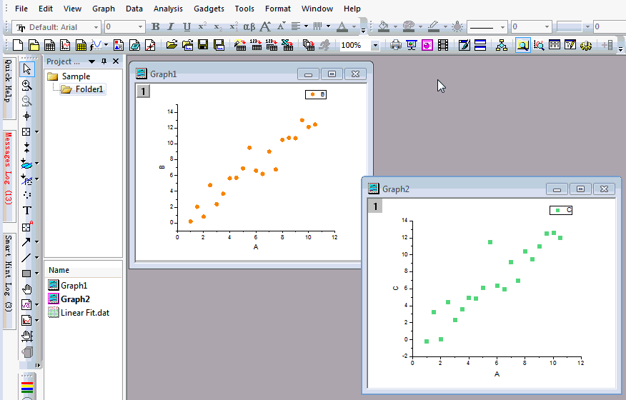

FAQ-137 Wie füge ich ein Logo in all meine Diagramme ein?
Letztes Update: 19.03.2018
add-master-obj
Um ein Logo mit identischem Stil und identischer Position in allen Diagrammen zu platzieren, können Sie die Masterseite verwenden.
Um die Masterseite zu verwenden:
- Wählen Sie Datei: Neu: Masterseite im Menü, um eine neue Masterseite im Projekt zu öffnen.
- Wenn Sie die Masterseite zum Hauptordner hinzufügen, wird das Masterelement automatisch im Diagramm mit den gleichen Dimensionen gezeigt.
Falls nicht, müssen Sie die Diagramme aktualisieren, nachdem Sie eine neue Masterseite erstellt oder diese aktualisiert haben.
- Passen Sie die Masterseite benutzerdefiniert an. Die Elemente in den Diagrammen werden automatisch aktualisiert.
- Klicken Sie auf die Schaltfläche Mastervorlage speichern, um Ihre Vorlage zu speichern. Das nächste Mal können Sie Datei: Neu: Masterseite wählen, um diese benutzerdefinierte Vorlage zu laden.

Hinweis:
- Für die in Origin 2018b erstellten Diagramme ist die Option im Menü Ansicht: Zeige: Bildschirmanzeige Master Items standardmäßig aktiviert. Master Items verwenden ist auf der Registerkarte Anzeige des Dialogs Details Zeichnung auf Seitenebene aktiviert. Wenn der Master nicht in einem Diagramm gezeigt wird, aktivieren Sie bitte diese zwei Einstellungen.
- Masterelemente werden nur in Diagrammseiten der gleichen Dimensionen als Vorlage gezeigt.
- Die Kommentare, die unter der Schaltfläche Mastervorlage speichern gezeigt werden, sind "verborgen" und werden nicht auf Ihre Diagrammfenster angewendet.
- Die Masterseite muss im Projekt gespeichert werden. Andernfalls sind die Logos weg, wenn Sie das Projekt erneut öffnen.
Schlüsselwörter: Masterseite, Masterobjekt, Diagrammobjekt, Hochformat, Querformat, Logo, Bild
Origin-Version mind. erforderlich: 2018b